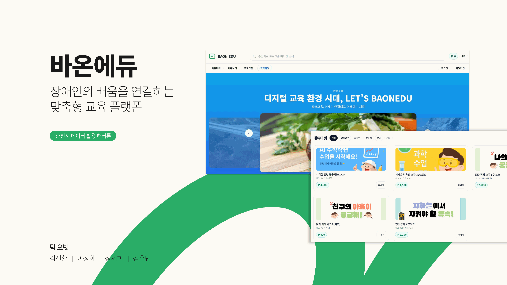
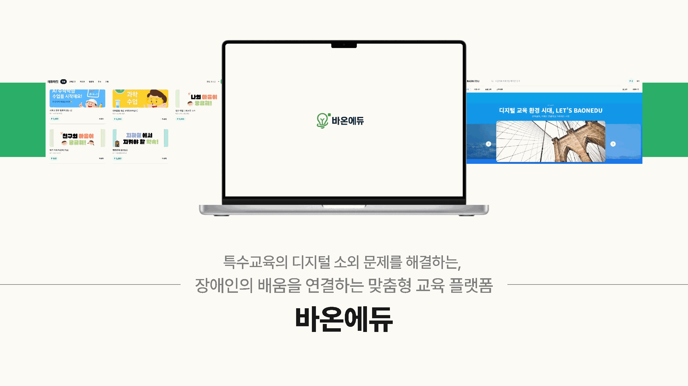
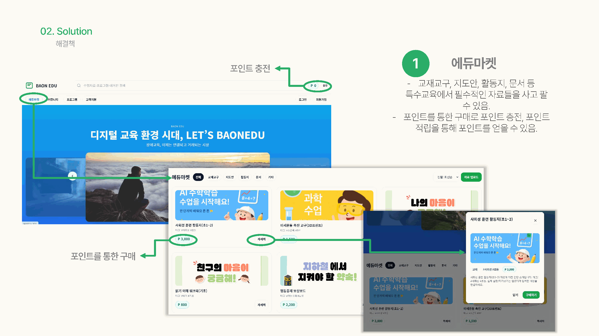
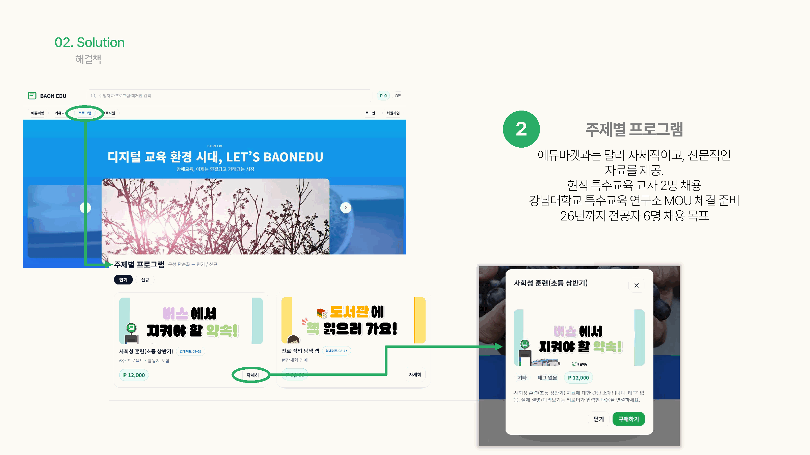
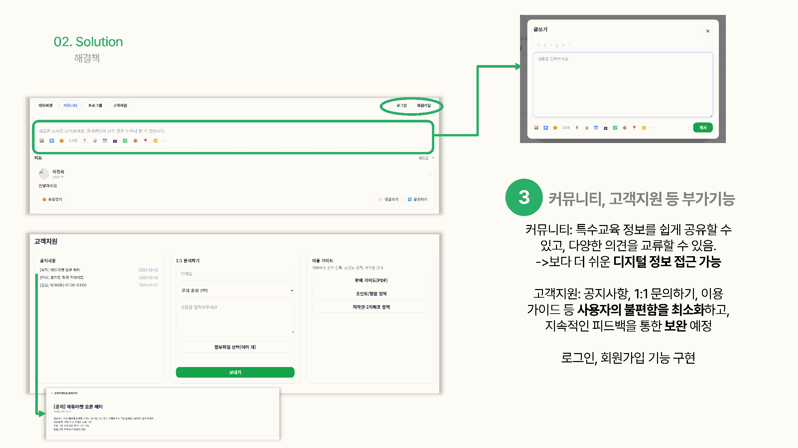

장애인 대상 교육 정보가 흩어져 생기는 탐색 부담을 줄이고, 교육·여가·주제별 프로그램과 커뮤니티를 한 플랫폼에서 연결했습니다.

오빗팀 발표자료에서 실제 서비스와 핵심 기능을 보여주는 화면만 선별했습니다.




콘텐츠가 많아질수록 사용자는 메뉴 이름과 분류 방식에 의존합니다. BAONEDU에서는 프로그램 유형을 명확히 나누고, 메인 화면에서 상세 정보와 커뮤니티까지 자연스럽게 이동하도록 정보 구조를 설계했습니다.